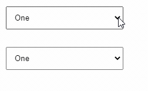

來聊聊 Component 與 Directive 以及其 input / output 設計模式
緣起
最近看到一個範例是在描述如何用 Directive 來達到所需的目的
程式看完了也理解完了, 但是心中又冒出一個很常見的問題
why Directive? what is Directive?
在學習 Angular 的時候常常會遇到包 Component 這種想法, 那什麼時候要包 Component 以及為什麼要包呢?
那 Directive 又為何, 他和 Component 使用的時機又在哪呢?
Component vs Directive
兩者都有很重要的特性就是重用
Component 可以適用於大部分的情境, Directive 著重於對 DOM 的增強
如果需要多個 HTML 元素(UI), 這種情境一定選擇 Component, Component 可以讓你完整地將寫在 template 中的內容控制在自身的範圍內
@Input / @Output
如何能達到重用? 在 Angular 中的 @Input / @Output 就佔了很大的成分
藉由 @Input / @Output 可以讓父層與子層間進行無障礙的溝通, 有了溝通就可以衍伸出千變萬化的可能性
也許有人會問, 一定只能透過 @Input / Output 來進行交互嗎?
不, 還可以使用 Angular DI 的機制來將這些組件彼此串聯在一起, 但是 DI 是屬於全域面向的資料交互, 雖然也能做到父與子的溝通, 但是卻有點殺雞用牛刀了
直覺使用 @Input / @Output 是最為恰當的
那… 怎樣算是有效的去運用 @Input / @Output 以及相關的設計模式又有那些呢?
@Input
以下列出常用的幾種做法, 沒有絕對好和絕對壞, 能了解所處的場合該用哪一種方式就是最好的
最為簡易的方式就是需要什麼變數就定義幾個 @Input
1 | <ui-button text="Click" color="primary" size="small"></ui-button> |
在單純的元件上直接使用這種方式可以讓可讀性大大的提升
如果狀況變複雜了, 很多必填的屬性都要填寫才可以讓這個元件正常運作
1 | <ui-button |
這種也只是稍微複雜而以, 通常可以經過完善的文件以及 code comment 等方式來保有可讀性
如果是同一種類型的 Input, 就不適合將之拆分, 就會像是下面一個 Input 包含大量的設定
1 | options = { |
1 | <ui-button text="Click" [options]="options"></ui-button> |
這個模式會讓 template 變精簡, 但是可讀性變比較差, 但是好處就是可以填入大量的細節
@Output
Output 相較之下就比較單純, 基本上就一個蘿蔔一個坑
1 | <ui-button |
如果要複雜的還是有，將 Component 內的 function 都 export 出來, 讓父層擁有直接操作 Component 的能力
1 | // 這裡是 Parent |
1 | <ui-button text="Click" (click)="onClicked($event)"></ui-button> |
1 | // 這裡是 `Component` 裡面 |
這種寫法目前沒看到什麼值得一提的好處, 如果要讓父層操作 Component, 我們可以使用更標準的作法
@ViewChild
物件導向? 用於訂閱?
以上對 @Input / @Output 介紹幾種常見的設計模式, 這邊來聊聊如果 input 內容是 object、function、promise、observable、subject 這些比較特殊一類, 會有什麼樣的變化呢?
這邊說到的 object 泛指 {}、[]、Map、Set 這些 call by address 的變數
基本上我們在 javascript 的概念中要有輸出不會去影響輸入的概念, 也盡量保持著低耦合性的設計
所以在這種 call by address 的類型, 有很大的機會會在 Component / Directive 中 "不小心" 將值給改掉了，這點要非常小心
–
如果 input 傳來了是 function, 或是 object 裡面裝著 function, 都屬於 function 層面
這種設計就會讓 Component 對父層有較高的耦合性, 這種設計模式會讓 Component 直接有能力對父層進行這些 function 的呼叫, 進而反向的去影響父層
但是這樣不代表就是不好, 下面用兩個例子來說明
Bad
1 | // 這是父層 |
Component必須需要知道什麼時候要執行.show以及.close, 然後這些特定的 function 也被寫死在裡面
Good
1 | // 這是父層 |
從 input 的命名開始就用狀態(動作)來命名, 不會綁死在
dialog這個特定意義的命名, 然後 input 中也只是定義對應狀態所使用到的 function, 真正的 logic(show close) 則是在父層在去實現這樣的方式比完全耦合的方式好得多更多, 這邊的
click、dbClick只是舉例, 不要認為這種 case 就用 @Output 就好啦的想法去看這個範例, 這樣是要表達妥善地去設計 input
其實若 input 可以傳入 function 了, 某些時候就不用使用 @Output 了, 使用 @Output 的目的只是很明確地用於可讀性, 讓開發者知道會有這樣的事情被傳出來, 進而在父層做某些事
會使用這樣子的 @Input, 所處的 case 就比較複雜一些了, 所以本來的可讀性就不會這麼高了
–
那麼 promise、observable、subject 呢? 它們只是更為複雜的 function 罷了
所擁有的特性就是 等待、訂閱、成功要做什麼(resolve)、失敗又要如何(reject)
如果父層傳入一個 promise 或是 subject, 只要 Component 去撰寫 then or catch or subscribe, 這樣父層發生什麼的時候, Component 都會自動反應, 而不用手動去呼叫
這類自動反應、自動訂閱的方式可以用正向, 也可以用於反向, 全看開發者怎麼去設計
因為 observable 比較抽象, 下面有個例子可以幫助理解
案例
使用 Directive 將 select 下拉選單做一個即時儲存與狀態顯示
- 改變選項時, 通知父層呼叫 api, 並顯示 loading
- 若是成功就顯示打勾圖式, 1 秒後隱藏
- 若是失敗就顯示錯誤圖式, 1 秒後隱藏

思路 1
@Input 傳入一個 Function, 並且在 select change 的時候去執行此 function 會得到一個 observable 然後訂閱他, 訂閱的時候就會讓父層發出 request
因為是 observable，所以 request 的結果會是在 Component 這邊被處理
1 | this.dropdownObservable = (value) => |
1 | ("observableFn") private observableFn: Function; |
思路 2
不用 @Input, 完全靠 @Output 將關聯的程式傳出去給父層做使用
- 將值傳出
- 將成功以後要做的 function 傳出
- 將失敗以後要做的 function 傳出
1 | dropdownChange(evt): void { |
1 | () dropdownChange = new EventEmitter<{ |
以上就使用 observable 訂閱 + 自動反應機制來完成, 當然用其他設計模式來完成也是可以的, 沒有最好的只有更好的, 或慘不忍睹的
總結
同樣的需求, 可以用不同的設計模式去完成這件事, 但是其中會牽扯到可讀性, 合理性, 與複雜度等等
在接觸設計模式之前, 我們能做的只能多聽多看多研究, 好好了解這些方式背後的優缺點
程式碼: 點我
https://indepth.dev/posts/1472/angular-self-saving-drop-downs-yet-another-Directive